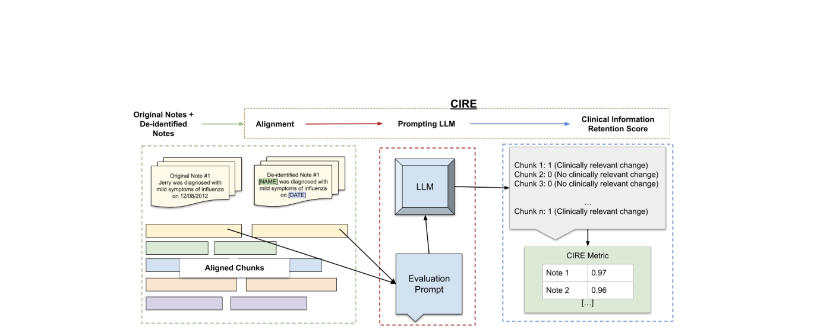

Toolkits for evaluating clinical artificial intelligence systems – hosted at University of Alberta
Tools
Toolkits for evaluating clinical artificial intelligence systems
AQAT (Alberta Quality Assessment Tool: Risk of Bias)
Evaluation framework specifically designed for risk assessment in medical diagnostic AI systems, focusing on reliability and clinical safety standards.
Authors
Carrie Ye, J Ross Mitchell, Daniel C Baumgart, Zechen Ma, Angela Lim Fung, Daniela Garcia Orellana, Juel Chowdhury, Abass Abdullah, Steven Katz, Jacob L Jaremko, Pierre Boulanger, Claire E H Barber, Gillian Lemermeyer, Hosna Jabbari, Lili Mou, Maryam Mirzaei, Mary Waithera Beckett Githumbi, Puneeta Tandon, Randy Goebel, Rhys Clark, Whitney Hung, Marjan Abbasi, Farhad Maleki, Scott Klarenbach, Mohamed Abdalla

CIRE (LLM-based Clinical Information Retention Evaluation)
An LLM-based metric that measures whether clinically meaningful information has been changed, removed, or preserved in clinical texts.
Authors
Kiana Aghakasiri, Noopur Zambare, JoAnn Thai, Carrie Ye, Mayur Mehta, J Ross Mitchell, Mohamed Abdalla
A large-scale benchmark of long, coherent multi-domain conversations (up to 10 million tokens) with probing questions designed to measure diverse long-term memory abilities in LLMs.
Authors
Mohammad Tavakoli, Alireza Salemi, Carrie Ye, Mohamed Abdalla, Hamed Zamani, J Ross Mitchell
A cognitively inspired memory-augmentation framework that equips LLMs with episodic, working, and scratchpad memory systems to improve performance on long-context tasks evaluated by BEAM.
Authors
Mohammad Tavakoli, Alireza Salemi, Carrie Ye, Mohamed Abdalla, Hamed Zamani, J Ross Mitchell
Evaluation framework specifically designed for risk assessment in medical diagnostic AI systems, focusing on reliability and clinical safety standards. Fill in the judgements below and export when complete.
Type of Bias
Potential Source of Bias
Support for Judgement
Judgement (RoB)
Questions
Question Source
• If questions were created/generated specifically for the study, describe the method used to create the question dataset, including who created the questions and if the questions are reflective of the intended study objective
• If questions were selected from an existing question source, adequately describe the source to allow an assessment of whether it addresses the intended research question
• Expectancy bias due to creation of questions reflective of researcher's expectations
• Representation bias due to question source not being representative of the target population
• Construct-validity bias due to questions not matching the research aim
Question Selection
• If questions were selected from an existing question source, describe the method used to select the questions from the original source (eg, random, consecutive, all, or by certain factors)
• Sampling bias due to question not being representative of the intended setting
Question Manipulation
• If any questions were manipulated from the original source, describe and justify the rationale for the manipulation.
• Or if any prompting was provided in addition to the index question, report the exact wording of the prompt(s)
• Construct-validity bias due to questions not matching the research aim
• Expectancy bias due to question manipulation that may reflect researcher's expectations
Reference Answers
Reference Answer Source
• If reference answers were generated specifically for the study, describe the method used to create the reference answer dataset, including who created the reference answers and if the answers are reflective of a true reference standard
• If reference answers were selected from an existing reference answer source, adequately describe the source to allow an assessment of whether it is reflective of a true reference standard
• Construct-validity bias due to answers not matching the true reference standard study was designed to evaluate
• Representation bias due to question source not being representative of the target population
Reference Answer Selection
• If not all reference answers to a given question were used, describe the method by which reference answers were selected
• Sampling bias due to answers not being representative of the intended setting
LLM Answers
LLM Answer Selection
• Describe how many answers were generated for each question and if not all answers were assessed, describe how answers were selected for assessment
• Sampling bias due to answers not being representative of all LLM answers
Evaluators
Evaluator Selection
• Describe the method used to select evaluators, and assign evaluators to specific LLM qualities
• Sampling bias due to evaluators not being representative of the intended setting
• Observation bias due to inadequate or inappropriate evaluator expertise for a specific LLM quality
Blinding of Evaluators
• Describe all measures used, if any, to blind trial evaluators and researchers from knowledge of the answer source. Provide information relating to whether the intended blinding was effective.
• Detection bias due to knowledge of the answer source
Outcomes
Performance Metrics
• Describe specific metrics used for each outcome quality
• Describes if desired outcomes were pre-specified prior to conducting the study.
• Measurement bias due to the LLM qualities or evaluation metrics not matching the research aim
Contact Us
Interested in clinical validation, research partnership, or technical implementation?